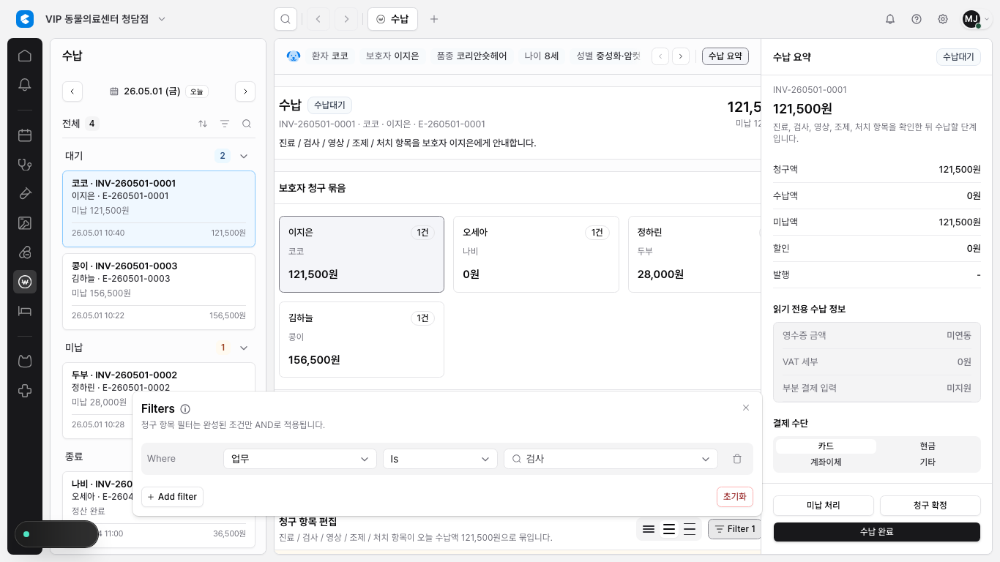
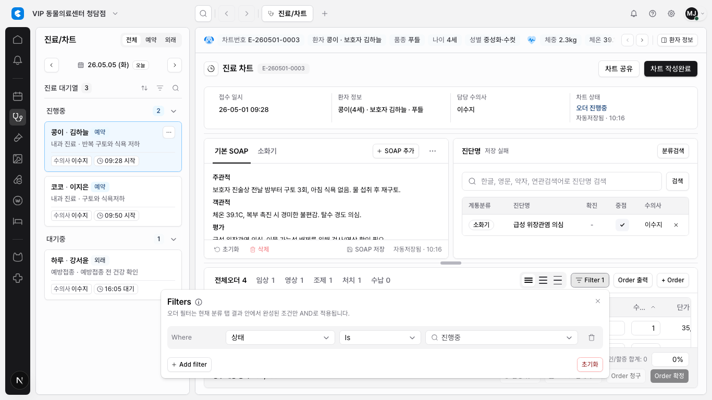

DEN-294 고급 필터 빌더 테이블 적용
DEN-293에서 만든 공용 advanced filter builder를 실제 수납과 진료/차트 오더 테이블에 적용했다. 두 화면 모두 기존 정렬 정책은 유지하고, 필터는 섹션 Filter 버튼에서 열리는 공용 builder로 동작한다.
적용 범위
수납 청구 항목
업무, 청구금액 필드를 공용 builder config로 연결했다.
진료/차트 오더
상태, 수의사 필드를 공용 builder config로 연결했다.
첫 open 상태
조건 1개짜리 빈 draft row만 표시한다.
active 계산
필드, 조건, 값이 완성된 row만 필터와
Filter N에 반영한다.
변경 사항
src/features/billing/module.tsx: feature-local billing filter builder를 공용 builder로 교체했다.src/features/chart/module.tsx: feature-local chart/order filter builder를 공용 builder로 교체했다.src/components/ui/select.tsx: filter popover 안의 select dropdown이 클릭 가능하도록 overlay layer를 조정했다.tests/billing.spec.ts,tests/chart.spec.ts,tests/table-sort-filter-qa.spec.ts: 새 auto-apply builder UX에 맞춰 검증을 갱신했다.
증거 이미지


검증 결과
npx tsc --noEmit통과- DEN-294 관련 파일 대상 ESLint 통과, 기존 chart hook 경고 2개만 남음
- 공용 builder foundation spec 통과, 3 passed
- billing focused sort/filter spec 통과
- chart focused sort/filter spec 통과
- cross-table QA spec 통과, 3 passed
npm run docs:check통과git diff --check통과npm run lint전체 실행은 기존 dirty worktree의src/features/hospital-admin/module.tsx:1848오류에서 중단됨tests/billing.spec.ts tests/chart.spec.ts전체 실행은 25 passed, 1 failed. 실패는 SOAP route-backed save 텍스트 불일치로 이번 필터 변경과 직접 관련 없음
남은 범위
- 고객관리와 병원관리 order catalog는 DEN-294에서 교체하지 않았고 기존 feature-local builder를 유지한다.
- saved views, saved filters, active chip row, URL/storage persistence는 계속 제외한다.
- OR/nested group 실제 동작, Supabase/DB/RLS/server-side filtering은 별도 승인 범위가 필요하다.